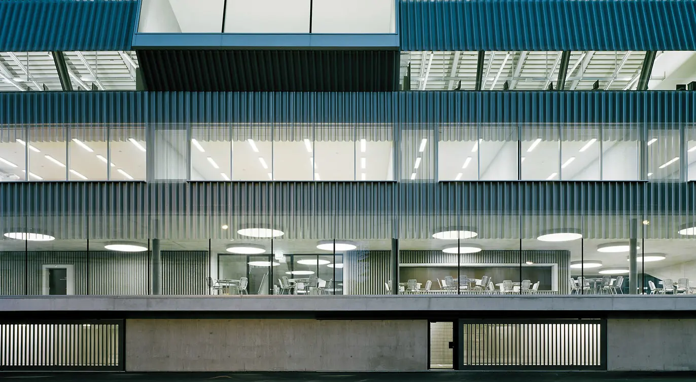

Über uns
Alle feiern!
130 Jahre – das feiert man mit Freude, Neugier und einer Prise Wagemut!
Von Januar bis Juni 2026 lädt die Berufsfachschule zu einer Reise durch ihr Wissen ein: feierliche Eröffnung am 14. Januar, eine lebendige Uhr, die unsere Berufe symbolisiert und von unseren Lernenden gebaut wurde, das EMF-Museum, Plakate aus vergangenen Zeiten, Interviews mit Lernenden und Lehrpersonen über Vermittlung und Pädagogik, eine Ausstellung zeitgenössischer Künstler*innen zur Mission des Künstlers von F. Hodler, inspirierende Konferenzen und… ein Festival mit Phanee de Pool am 13. Mai 2026!
Seit 130 Jahren bilden wir weit mehr als Berufe aus!
Kommen Sie vorbei, entdecken, erleben und teilen Sie den Geist der Vermittlung.
Interviews mit Lehrern und Schülern
Anlässlich des 130-jährigen Jubiläums unserer Schule stellen wir diejenigen vor, die das Herzstück unserer Schule bilden: die Lernenden und die Lehrenden. In einer Reihe von kurzen Interviews, die von Februar bis Juni 2026 monatlich ausgestrahlt werden, teilt jeder seine Vision von der Wissensvermittlung. Zwischen Erinnerungen, Erfahrungen und einem Blick in die Zukunft spiegeln diese Berichte den Reichtum des generationsübergreifenden Austauschs und die Vitalität der Berufsschule Freiburg wider.
Veranstaltungen
Am 14. Januar 2026 ab 15 Uhr eröffnet die Schule für Berufe feierlich die Festlichkeiten zu ihrem 130-jährigen Bestehen. Dieser besondere Moment markiert den Auftakt zu sechs Monaten voller Feierlichkeiten rund um Vermittlung, Pädagogik und Know-how. Mit Reden, Begegnungen und Überraschungen wird an diesem Abend an all jenen gedacht, die die Schule seit über einem Jahrhundert mit Leben füllen. Eine wunderbare Gelegenheit, die EMF-Gemeinschaft um ihre grundlegenden Werte zu versammeln und gemeinsam ein lebendiges und zukunftsgerichtetes Erbe zu feiern.
Im Rahmen des Licht-Festivals wird ein kollektives Werk präsentiert, das aus der Zusammenarbeit zwischen Eikon, der HEIAFR, Minus 3 und der Berufsfachschule (EMF) entstanden ist und das Thema der Vermittlung von Wissen durch Licht und Technologie erforscht. Dieses innovative Projekt vereint Handwerk, Pädagogik und Kreativität und symbolisiert den Übergang von Wissen und Fähigkeiten.
Die Ausstellung „Die Mission des Künstlers – Zeitgenössische Dialoge mit F. Hodler“ wird vom 28. Januar bis 28. Februar 2026 präsentiert. Elf zeitgenössische Künstler werden ihre Werke ausstellen, wobei jeder auf seine eigene Weise das Erbe von Hodler und das Thema der Vermittlung in der Kunst erforscht. Durch ihre Kreationen hinterfragen diese Künstler die Rolle des Künstlers in der heutigen Gesellschaft und würdigen zugleich den nachhaltigen Einfluss des Werks von Ferdinand Hodler.
Ferdinand Hodler übte als Maler, aber auch als Pädagoge, einen nachhaltigen Einfluss aus. In Freiburg unterrichtete er von 1896 bis 1899 an der Gewerbeschule und hielt im Salon der Amis des Beaux-Arts seinen berühmten Vortrag «Die Aufgabe des Künstlers». Die Ausstellung im Dachgeschoss des MAHF zeigt zwanzig Werke seiner Freiburger Schüler, darunter Oswald Pilloud, Raymond Buchs oder Elisa de Boccard, die den Einfluss Hodlers auf das lokale Kunstschaffen belegen.
Treten Sie in Dialog mit der Vergangenheit!
Seit 130 Jahren gestaltet die EMF die Zukunft. Um dieses historische Jubiläum zu feiern, haben unsere Auszubildenden im 4. Lehrjahr die Grenzen der Kreativität erweitert und eine außergewöhnliche Maschine entwickelt. Sie ist das Ergebnis der Verschmelzung unserer vier Ausbildungssäulen: Polymécanique, Automatique, Électronique und Informatique.
Jedes Zahnrad, jeder Schaltkreis und jede Codezeile wurde von der nächsten Generation von Fachleuten sorgfältig zusammengesetzt. Entdecken Sie sie in unseren Räumlichkeiten und nehmen Sie an einem einzigartigen interaktiven Erlebnis teil! Sind Sie bereit für dieses Erlebnis? Wir erwarten Sie!
Vom 14. Januar bis Ende Juni 2026 lädt Sie die Berufsfachschule Fribourg anlässlich ihres 130-jährigen Jubiläums zu einer einzigartigen Retrospektive ein. Eine Auswahl von Objekten, Maschinen und Pressespiegeln, die in der Eingangshalle der Schule ausgestellt sind, nimmt Sie mit auf eine Reise durch die Geschichte der verschiedenen Ausbildungsgänge von gestern bis heute.
Zum Abschluss unseres 130-jährigen Jubiläums laden wir dich ein, die Ecole des Métiers mit einem außergewöhnlichen Programm zu feiern, das verschiedene Musikstile vereint, bei denen jedoch die Texte eine wichtige Rolle spielen.
Programm :
- 16:30 : Chor der Ecole des Métiers Fribourg
- 18:00 : The Sharepoints
- 19:15 : Aillurophobia
- 20:15 : Azalée
- 21:30 : Phanee De Pool
Das Buch zu den 130 Jahren
Seit 130 Jahren bildet die École des Métiers de Fribourg Generationen von Lehrlingen und Schülern aus, immer im Einklang mit den technischen und industriellen Entwicklungen. Ein zweisprachiges Werk zeichnet diese Geschichte anhand von Erzählungen, Erfahrungsberichten und Archivbildern nach. Es begleitet eine Institution, die es zwischen Tradition und Innovation verstanden hat, ihr Know-how weiterzugeben und dabei ihrer Mission treu zu bleiben: die Jugend auf die Berufe von morgen vorzubereiten, im Dienste der Gesellschaft und der Freiburger Wirtschaft.
KaufenKaufen
Tauchen Sie ein in die Ausstellung „Die Mission des Künstlers – Zeitgenössische Dialoge mit F. Hodler“ mit diesem begleitenden Werk. Der Katalog bietet einen Zugang zur Thematik der Vermittlung und des Lernens anhand von Ferdinand Hodlers berühmtem Vortrag. Zugleich wird sein malerisches Werk im Kontext seiner Zeit und im Dialog mit den zeitgenössischen Arbeiten der Ausstellung betrachtet. Neben den Beiträgen von elf Künstler*innen beleuchtet das Buch die pädagogische Dimension der Kunst und des Zeichnens sowie deren Vermittlung an Studierende und Lernende.
Das Buch zur Ausstellung

Presse
Seit über 130 Jahren prägt die Schule für Berufe die Berufsbildung und das wirtschaftliche wie gesellschaftliche Leben der Region. Diese Webseite vereint Presseauszüge, die ihre Entwicklung im Lauf der Jahrzehnte dokumentieren: Einweihungen, Porträts, Wettbewerbe, Debatten und Innovationen. Die Archive bieten einen einzigartigen Blick auf die Geschichte der Schule, der Berufe und der Technologien. Als wertvolle Zeugnisse der Vergangenheit erinnern sie an die Kraft der Weitergabe und inspirieren die Zukunft.

Vorstellung der Schule
Interesse an der Berufsfachschule?
An der Berufsfachschule Freiburg (EMF) bilden wir mehr als
nur Lernende aus: Wir entdecken Talente und bereiten die
Fachkräfte von morgen vor. Dank hochwertigem Unterricht,
modernen Infrastrukturen und einer praxisnahen Pädagogik
entwickeln unsere Schüler*innen gefragte und wertvolle
Kompetenzen. Die EMF ist auch ein Ort der Vermittlung, der
Begleitung und der Innovation – ein Ort, an dem man durch
Handeln lernt.
Entdecken Sie eine Welt spannender technischer
Berufe und eine Schule, die auf eine solide, kreative und
engagierte Zukunft vorbereitet.